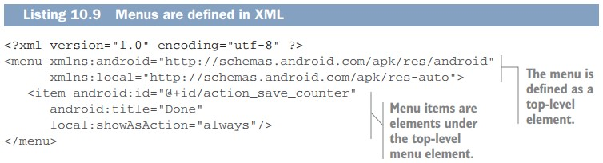

Menu는 menu 폴더에 저장되어 있는 resource로 정의된다. Menu는 menu item들의 목록과 그것들의 구성을 포함한 XML 파일이다.
Toolbar에 Done 버튼을 추가하기 위해 menu를 추가할 필요가 있다. Resource 폴더에 menu라는 폴더를 만들고 new_counter_menu라는 이름의 XML 파일을 만든 뒤 아래 코드를 추가해라. 
이러한 menu resource들은 menu를 정의하는 하나 이상의 item element가 포함된 최상위 수준의 menu element를 포함한다. 이 장의 뒷부분에서 볼 수 있는데, menu resource 중 하나를 툴바에 inflate하여 menu에서 item을 얻을 수 있다. 이 item들이 inflate 될 때, OS는 사용 가능한 공간을 알아보고 가능한 한 많은 item을 표시하고 나머지는 수직 타원(세 개의 수직점)을 사용하여 보여지는 오버플로 메뉴로 표시된다. 각 menu item에 대하여 text나 icon으로 규정지을 수 있고 항상 menu에 두든 overflow menu에 두든 적절한 곳에 둘 수 있다.(자동으로 한다는 건지 그렇게 디자인하기를 권장한다는 말인지는 모르겠다.)
이번 경우엔 android:title="Done" property를 통해 menu에 text를 가진다. 이 기능은 사용자들이 많이 이용할 것이니 local:showAsAction="always"를 통해 항상 표시해둔다. 이 menu 또한, ID를 가진다. ID setting은 아주 중요하다. Android나 MvvmCross나 menu와 code를 연결하는 방식은 없지만, 해당 ID를 가진 menu item이 tap될 경우 Activity 클래스에서의 메서드가 호출되게는 할 수 있다. ID를 setting함으로써, Activity안에서 어떤 menu item인지 식별할 수 있다.
자, 여기 까지가 resource에 관한 내용이다. 이제 view code를 시작해보자.